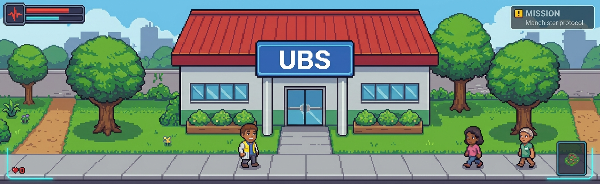

SUS QUEST
MISSÃO TERRITORIALIZAÇÃO
PRESS START

“A equipe recebeu uma nova missão.”
“Antes de agir, precisamos conhecer o território, as pessoas e os problemas que existem aqui.”
🎯 Conhecer o território
👥 Identificar a população
🔎 Investigar problemas
🤝 Compreender os determinantes sociais
⚕️ Planejar uma resposta em saúde
Explore pelo menos 5 dos 6 locais do território.
LOCAIS: 0 / 6

As informações descobertas durante a missão aparecerão aqui.
Converse com os 4 personagens para compreender diferentes perspectivas do território.
NPCs: 0 / 4


Converse com alguém para descobrir informações.
Encontre todas as evidências disponíveis antes de enfrentar o problema.
EVIDÊNCIAS: 0 / 6
Alteração na qualidade da água.
Aumento de crianças com diarreia.
Acúmulo de lixo próximo à água.
Registros de casos recentes.
Informação obtida durante visita.
Atividade próxima ao curso d'água.
Escolha a conduta mais adequada em cada situação.
QUESTÃO 1 / 5

Diversas crianças apresentam diarreia. A equipe precisa agir de forma integrada.
O território foi compreendido e a equipe conseguiu organizar uma resposta integrada.
“Conhecer o território é mais do que conhecer um mapa. É compreender as pessoas, suas relações e suas necessidades.”
Os recursos da equipe chegaram a um nível crítico.
Não desista. Revise as informações do território e tente novamente.